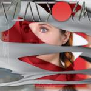

Holly Herndon Platform
(4AD / RVNG Intl)
On her second album Platform, Holly Herndon's stated aim is to make programmatic music unthinkable in any other era. The Internet is now inextricable from the experience of western consumer culture, and yet still new – I struggle to think of any narratives about how the explosion in communication technology has affected our shared experience that go beyond merely reflecting and imitating it, or else reiterate now-passé technophobia. At the turn of the century, Radiohead's Kid A is the most memorable example of music that used the sonic material of the future to express terror at its projected future; you felt like in all their digital experimentalism they were using the sounds and tools of the new era against itself.
Herndon's music comes from entirely within a digitalised, superconnected society; notions of technology & its effects are thematically prominent, but she doesn't really approach these themes from any kind of angle, as it's the heart & soul of what her music does. Chorus, the first single from the record, takes its structural fabric quite literally from her internet browsing history, sampling Youtube & Skype audio into a kaleidoscopic collage of syllable fragments, its chaotic beat-matrices and clipped half-syllables evocative of the radical diaspora of the internet and how we choose to navigate it – the chaos of its content, the familiarity of our habits with it.
The finest tracks are the ones with the most ideas stuffed into them – you get a sense of the overspill, the stunning polyrhythms she uses reaching breaking point under layer after layer of sampling. Opener Interface follows the no-two-bars-the-same rule which makes Aphex Twin's knottier compositions so appealing; after two minutes & twenty seconds in which you can barely make out the barlines, an angular bassline snaps the track into focus, displaying Herndon's strong influences from club culture alongside the semantic overload.
Despite her ear for what works on the dancefloor, it's largely headphone-oriented, and contains some confounding moments of experimentalism: most notably the abstract-poetic spoken-word-heavy tracks Locker Leak and Lonely At The Top, the latter a collaboration with Claire Tolan, host of a Berlin Community Radio show devoted to Autonomous Sensory Meridian Response (ASMR), a non-musical genre of sound (which is younger than Youtube) designed to generate phantom physical sensations. Though it disrupts the album's flow hugely, the use of ASMR makes total sense – I can't report having felt the intended tingling effects, but it was its failure to make that physical connection that spoke to me.
Although more stylistically cohesive than her 2012 debut Movement (which felt more like a calling card for her diverse talents than an album proper), Platform suffers from the breadth of its ambition. The majority of the tracks are memorable for their individual feats of sound sculpturing above their structure. Unequal, for instance, finds strange juxtapositions between an array of vowel sounds, yet without a beat to anchor it, its five minutes drag. Morning Sun sounds like a glitchy rewrite of Laurie Anderson's O Superman, and while it has sonically fascinating moments, its totality feels difficult to parse. Particularly with the slower tracks, Herndon's compositional rigour impedes the listener's engagement.
It will be interesting to see how Herndon's music will come to be regarded in a decade or two; even if this record isn't perfect, it's clear that she will become an influential figure in high-brow electronic music. Compared to the anachronistic source material of the “vapourwave” genre (which also explored, more playfully, themes at the intersection of capitalism, technology, and the internet), which largely used 90s desktop-computer visual aesthetics and 80s pop-schmaltz samples, Herndon's music succeeds at evoking the future without regression to some obsolete past vision of what the future would become. It's perhaps her lack of irony that makes her stand out among her peers: her acceptance of her subject material's entrenchment in every day life that functions as the prerequisite for her music rather than the thing her music strives to prove.
25 June, 2015 - 04:26 — Stephen Wragg